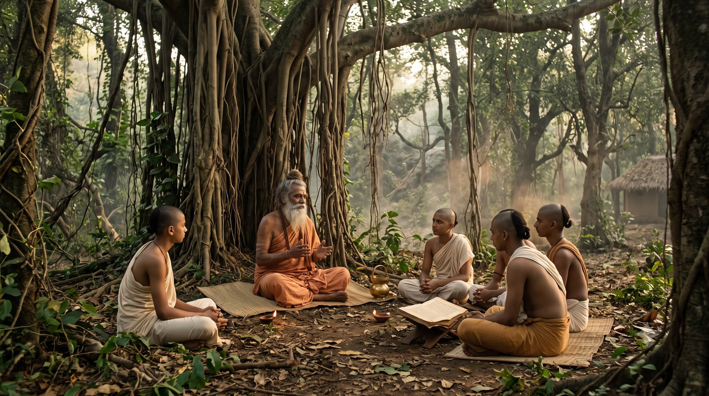
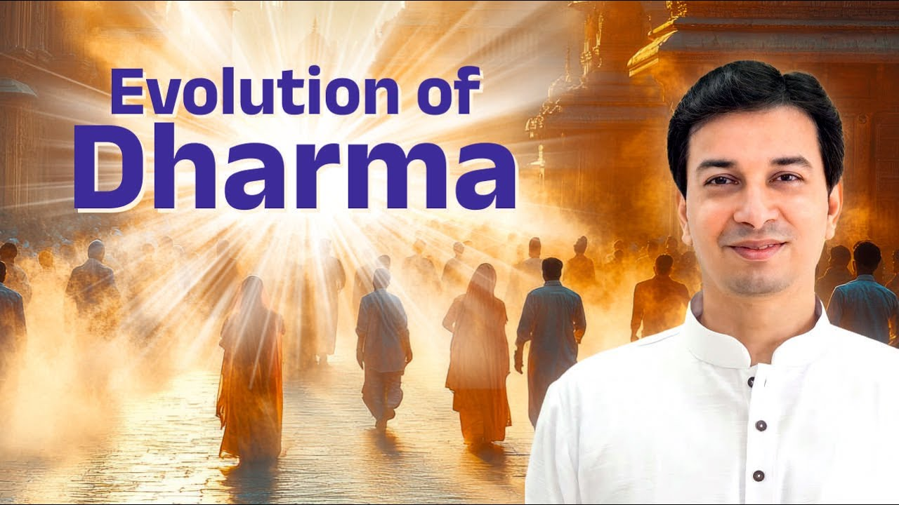

क्या आपने कभी सोचा है कि हम पूजा क्यों करते हैं? दक्षिणा की परंपरा कहाँ से आई? और इतने सारे देवता, हर इच्छा के लिए अलग पूजा, यह सब कैसे बना?
इस प्रवचन में आचार्य उपेंद्र जी हमें वेदों की यात्रा पर ले चलते हैं: मंत्र संहिता से ब्राह्मण, आरण्यक और अंत में उपनिषद तक। यह कहानी केवल इतिहास नहीं, बल्कि यह समझने का निमंत्रण है कि धर्म का असली उद्देश्य क्या था।
संक्षेप में, सनातन धर्म का विकास वेद के चार भागों में दिखता है: मंत्र संहिता में ऋषियों ने परमेश्वर और प्रकृति की स्तुति की; ब्राह्मण भाग में यह स्तुति कृति बनी, यानी यज्ञ, दान और पूजा; आरण्यक में वन का चिंतन आया; और उपनिषदों में आत्मा का ज्ञान मिला, जो अंतिम विद्या है।
मंत्र संहिता क्या है? जब ऋषियों ने प्रकृति को धन्यवाद कहा
वेद का पहला भाग है मंत्र संहिता, यानी परमेश्वर की स्तुति (praise)।
आचार्य जी एक सुंदर दृश्य बनाते हैं। आपके घर एक अतिथि आया। आपने कहा, "आइए, बैठिए", और दो घंटे बस उसकी तारीफ़ की: आपको उपाधि मिली, आपकी नृत्य प्रतियोगिता थी, आपका व्यापार बढ़ा। फिर कहा, "अब बहुत हो गई स्तुति, अब आप जाइए।" क्या ऐसा चलेगा?
उस समय चारों वर्ण बुद्धि के अनुसार थे। खेती वर्षा पर निर्भर थी, और ब्राह्मण बुद्धि वालों के पास समय था, शांत चित्त था, वासनाएँ कम थीं। राजा राज-काज में, वैश्य व्यापार में, और शूद्र श्रम में लगा था।
ऋषि-मुनियों ने एकांत में प्रकृति को देखा: सूर्य कितनी निष्ठा से रोज़ उदित होता है, नदी कैसे निरंतर बहती है। उनके भीतर भाव उठा, "अब समय आ गया है कि मैं इसकी सराहना करूँ।" यही स्तुति अपने आप रचना बन गई, और वही बनी मंत्र संहिता।
क्या केवल शब्द काफ़ी हैं? ब्राह्मण भाग का जन्म
फिर प्रश्न उठा: अतिथि आया है, तो केवल "तुम अच्छे हो" कहने से क्या होगा? कम से कम एक लड्डू अर्पण करो, जल दो, हाथ-पैर धुलवाओ।
यहीं से जन्मा वेद का दूसरा भाग, ब्राह्मण, यानी कृति (action) का भाग। षोडशोपचार और पंचोपचार पूजा इसी भाव से आईं। यज्ञ, दान, तप, उपचार और पूजा, वेद का यह कृति वाला हिस्सा ब्राह्मण कहलाता है।
सूर्य का उदाहरण देखिए। पहले "हे आदित्य, हे सूर्य देवता" कहा। फिर लगा, इतना काफ़ी नहीं, चलो जल अर्पित करें। ऊपर से जल डाला तो नीचे वाले के सिर पर गिरा और शिकायत हो गई! फिर सूर्य मूर्ति में घर आ गए, और रोज़ नदी तक न जा पाने के कारण नई-नई क्रियाएँ बनती गईं।
ब्राह्मण वर्ण का नाम भी इसी भाग से आया। जो ब्रह्म के मार्ग पर चलता है, जिसका एक ही उद्देश्य ब्रह्म की ओर जाना है, वही ब्राह्मण है।
प्रेम दिखता है कर्म में
आचार्य जी इस सिद्धांत को जीवन से जोड़ते हुए कहते हैं कि प्रेम कृति में व्यक्त होता है।
पत्नी कहे, "मैं तुमसे बहुत प्रेम करती हूँ, पर तुम्हारे लिए चाय नहीं बनाऊँगी", तो यह नहीं चलता। और कोई दिन भर जप माला लेकर "हनी, हनी, हनी" जपता रहे, तो पत्नी किसी और के पास चली जाएगी!
श्रीकृष्ण राधा को कुसुम विहार, राधा कुंड, कृष्ण कुंड जैसे उपहार देते थे, अपने राजसी स्तर के अनुरूप। राजा कहे "मुझे तुमसे प्रेम है" और भारी कर लगाए, तो वह प्रेम नहीं। सड़कें बनवाए, सुविधाएँ दे, तब वह सच्चा प्रेम है। प्रेम बिना शर्त हो, और कर्म में झलके, नहीं तो वह प्रेम प्रेम नहीं था।
आप जिनसे प्रेम करते हैं, क्या वह प्रेम केवल आपके शब्दों में है, या आपके कर्मों में भी दिखता है?
धर्म की जड़ें: प्रकृति और पितर
स्वामी विवेकानंद ने भक्ति योग और कर्म योग में इस इतिहास का सुंदर वर्णन किया है। धर्म का आरंभ हुआ प्रकृति-पूजा और पितृ-पूजा से।
कभी पहला मनुष्य मरा होगा। लोगों ने सोचा, "कल यहीं था, कहाँ गया?" फिर खोज हुई, फिर कृति, फिर श्राद्ध और पिंड। आज भी श्राद्ध में हम दिवंगत के लिए अच्छा बोलते हैं (स्तुति) और विधियाँ करते हैं (कृति)।
देवता भी यहीं से आए, क्योंकि जो दिख रहा था उसी की पूजा हुई। साधना का मार्ग भी यही है: पहले साकार, फिर निराकार। ब्राह्मण अपनी-अपनी कुटिया और आश्रम में प्रकृति को धन्यवाद देते थे। क्या उनका उद्देश्य बुरा था? बिलकुल नहीं।
"तुझे अपना धन्यवाद स्वयं करना होगा"
ऋषियों को सिद्धियाँ और विद्या मिलते देख राजा और वैश्य जिज्ञासु हुए। ऋषियों ने सब बता दिया। पर राजसिक राजा बोला, "मेरे पास समय नहीं, तुम हमारे लिए करो। मेरी रक्षा के लिए करो।" वैश्य बोला, "धन के लिए करो, मैं दक्षिणा दूँगा।"
ऋषियों का उत्तर था कि उन्हें प्रकृति से जो मिला है, उसका वे धन्यवाद कर रहे हैं, और राजा को अपना धन्यवाद स्वयं करना होगा।
उन्होंने कहा, मैं तुझे यह विद्या सिखा सकता हूँ, जैसे सूर्य से मनु और मनु से इक्ष्वाकु को मिली। मैं तेरा मार्गदर्शक बन सकता हूँ। पर राजा बोला, "हमें बहुत काम है, तुम ही करो। इतनी गायें दूँगा।"
अंततः ब्राह्मण सभा ने कहा, "मुफ़्त की गाय मिल रही है, तो ले लो।" शास्त्रों के अनुसार दक्षिणा का आरंभ यहीं से हुआ। फिर यह विद्या भी विकसित हुई कि दूसरे के लिए पूजा कैसे हो। पतंजलि ऋषि ने बताया कि दूसरे के चित्त पर ध्यान करते हुए तपस्या का आदान-प्रदान होता है: अपनी तपस्या देना, उसका विष लेना। कुछ समय तक सब प्रसन्न रहे, पर सीखा किसी ने नहीं।
पूजा यांत्रिक क्यों हो गई?
तीन-चार पीढ़ियों बाद ब्राह्मण भूल गया कि वह किसके लिए पूजा करता था, और राजा भूल गया कि दक्षिणा क्यों देता था। अब दोनों ओर सब यांत्रिक (mechanical) हो गया।
फिर बाकी वर्गों ने देखा, "यह तो बस फूल चढ़ाता है, यह तो मैं भी कर सकता हूँ।" उन्होंने बाहरी क्रिया तो सीख ली, पर आत्म-तत्त्व वाला उद्देश्य नहीं। ब्राह्मणों का व्यवसाय जाने लगा, और उन्होंने कहा, "अब हमें आगे विकसित होना होगा।"
क्या मेरी अपनी पूजा भी केवल आदत बनकर रह गई है, या मुझे याद है कि मैं यह क्यों करता हूँ?
अनेक देवता, अनेक इच्छाएँ
अब पूजा इच्छाओं के अनुसार बँटने लगी: घर चाहिए तो यह पूजा, वाहन चाहिए तो वह पूजा, पुत्र चाहिए तो कोई और। नए देवता, नए मंत्र, नई विधियाँ, और हर एक में विशेषज्ञता।
आचार्य जी स्पष्ट कहते हैं कि यह लोगों को फँसाने के लिए नहीं था। यह सच्चा विकास था, वैज्ञानिक खोज जैसा। "आवश्यकता आविष्कार की जननी है": अस्तित्व का प्रश्न था, इसलिए बुद्धि विकसित हुई।
पर फिर चार-पाँच पीढ़ियाँ बीतीं, दोनों पक्ष फिर भूल गए, और अंत में यह आज के जैसा अरबों डॉलर का व्यवसाय बन गया। लोगों को लगा, इतना दिया तो ही काम होता है। और वेद का विकास फिर रुक गया।
याज्ञवल्क्य: जिसने सारा ज्ञान लौटा दिया
तभी आए याज्ञवल्क्य ऋषि। ब्राह्मण परिवार से होकर भी उन्होंने प्रश्न उठाया: "उद्देश्य क्या था? आत्म-साक्षात्कार। अब यह पूरी तरह एक व्यवसाय बन गया है।"
उनके गुरु बोले, "गलत लगे तो भी यही करना होगा, यही परंपरा है।" याज्ञवल्क्य ने कहा, "मुझे यह स्वीकार नहीं।" गुरु ने कहा, "तो मेरी दी हुई विद्या लौटा दे।"
कथा कहती है कि उन्होंने वमन कर दिया, यानी प्रतीक रूप में सारा ज्ञान लौटा दिया। फिर ध्यान में जाकर उन्होंने उच्चतर सत्य जाने: सत्य केवल कर्मकांड में नहीं, उससे ऊपर कुछ है।
स्थापित गुट ने विरोध किया, और राजसिक राजा की सहायता से नियम बना। आचार्य जी के अनुसार विभाजन हुआ: ब्राह्मणों का मार्ग शुक्ल यजुर्वेद कहलाया, और याज्ञवल्क्य के मार्ग को "काला, गलत" कहकर कृष्ण यजुर्वेद कहा गया। इसीलिए आज भी शुक्ल यजुर्वेद में कर्मकांड अधिक है, और कृष्ण यजुर्वेद में विधियों के साथ चिंतन अधिक।
उनका बहिष्कार हुआ, उन्हें वन जाना पड़ा। पर उन्होंने खोज जारी रखी, और समय आने पर वह ज्ञान समाज को लौटाया।
आरण्यक से उपनिषद तक
वन में जन्मा ज्ञान वेद का आरण्यक भाग कहलाया। उसी से बृहदारण्यक उपनिषद उत्पन्न हुआ। छांदोग्य उपनिषद दोनों का मिश्रण है, जिसमें कर्मकांड, शरीर और आत्मा, तीनों की बात है।
तो क्रम यह बना:
- १मंत्र संहिता: स्तुति
- २ब्राह्मण: कृति और कर्मकांड
- ३आरण्यक: वन में चिंतन
- ४उपनिषद: आत्मा का ज्ञान

श्रीकृष्ण कहते हैं: गुणों से ऊपर उठो
त्रैगुण्यविषया वेदा निस्त्रैगुण्यो भवार्जुन।
निर्द्वन्द्वो नित्यसत्त्वस्थो निर्योगक्षेम आत्मवान्॥
"वेद तीनों गुणों के विषयों तक सीमित हैं; हे अर्जुन, तू इनसे ऊपर उठ, और सीधे वेद का सार सीख।"
(श्रीमद्भगवद्गीता २.४५)
- निर्द्वन्द्व: सर्दी-गर्मी, लाभ-हानि, जय-पराजय, मान-अपमान, इन द्वंद्वों से ऊपर आ।
- नित्यसत्त्वस्थ: रजस और तमस की क्रियाएँ छोड़, सदा सत्त्व (purity) में रह। और सत्त्व मिलेगा सच्चे गुरु के पास।
- निर्योगक्षेम: क्या पाना है (योग) और क्या बचाना है (क्षेम), इसकी चिंता भी छोड़ दे; वह तेरा गुरु देख लेगा।
अनन्याश्चिन्तयन्तो मां ये जनाः पर्युपासते।
तेषां नित्याभियुक्तानां योगक्षेमं वहाम्यहम्॥
"जो अनन्य भाव से मेरा चिंतन करते हैं, उनका योग और क्षेम मैं स्वयं वहन करता हूँ।"
(श्रीमद्भगवद्गीता ९.२२)
वह ग्रंथ जो कहता है, "मुझे मत पढ़ो"
आचार्य जी एक चौंकाने वाली बात कहते हैं। गीता के दूसरे अध्याय में, इन्हीं श्लोकों से पहले, श्रीकृष्ण स्पष्ट कहते हैं कि जो केवल वेद के कर्मकांड वाले भाग में उलझा रहता है, वह मूढ़ है। वेद संसार का एकमात्र ग्रंथ है जो पुकारकर कहता है, "मुझे मत पढ़ो।"
पर वेदांत भी तो वेद ही है। आचार्य जी कहते हैं कि 100 पेज में से 96 पेज इग्नोर करने थे, और सीधा अंतिम चार पेज पर आना था।
यानी किसी सच्चे गुरु के पास आकर वह अंतिम विद्या सीखनी थी, जो आत्मा को जानने की विद्या है।
मैं अपने आध्यात्मिक जीवन में अब तक कौन से पृष्ठों पर अटका हूँ, और क्या मैं अंतिम चार पृष्ठों की ओर बढ़ने को तैयार हूँ?
मुख्य बातें
- वेदों का विकास चार चरणों में हुआ: मंत्र संहिता (स्तुति), ब्राह्मण (कृति), आरण्यक (चिंतन) और उपनिषद (आत्मज्ञान)।
- प्रेम केवल शब्दों में नहीं, कृति में व्यक्त होता है; यही ब्राह्मण भाग का सार है।
- धर्म का आरंभ प्रकृति-पूजा और पितृ-पूजा से हुआ, क्योंकि पहले जो दिखता है उसी की पूजा होती है: साकार से निराकार।
- दक्षिणा इसलिए आई कि राजसिक लोग स्वयं साधना नहीं करना चाहते थे; ऋषियों का संदेश था, "तुझे अपना धन्यवाद स्वयं करना होगा।"
- पीढ़ियों के साथ पूजा और दक्षिणा दोनों यांत्रिक हो गईं, और उद्देश्य, आत्म-तत्त्व, खो गया।
- याज्ञवल्क्य ऋषि ने व्यवसाय बन चुके कर्मकांड का विरोध किया, वन में खोज जारी रखी, और आरण्यक व उपनिषदों का ज्ञान दिया।
- श्रीकृष्ण कहते हैं: तीनों गुणों और द्वंद्वों से ऊपर उठो, सत्त्व में स्थित रहो, और योग-क्षेम की चिंता गुरु पर छोड़ दो।
- वेद के अंतिम भाग, वेदांत, को सच्चे गुरु से सीखना ही असली लक्ष्य है।

आगे पढ़ें

हम "शास्त्र" शब्द बहुत सुनते हैं, पर शास्त्र का अर्थ क्या है? आचार्य उपेंद्र जी इसे बहुत सरल शब्दों में खोलते हैं।

हम अक्सर सुनते हैं कि कुछ धर्मों में मूर्ति पूजा नहीं होती। विदेशों में, दूसरी परंपराओं में, मूर्ति को नहीं माना जाता। पर गुरुदेव एक सीधा सा प्रश्न…

गीता जी की समझ में सभी धर्मों का मूल स्रोत एक है: वेदों पर आधारित सनातन धर्म, जिससे आगे अन्य धर्म निकले। तत्व के स्तर पर सब धर्मग्रंथों में गहरा…